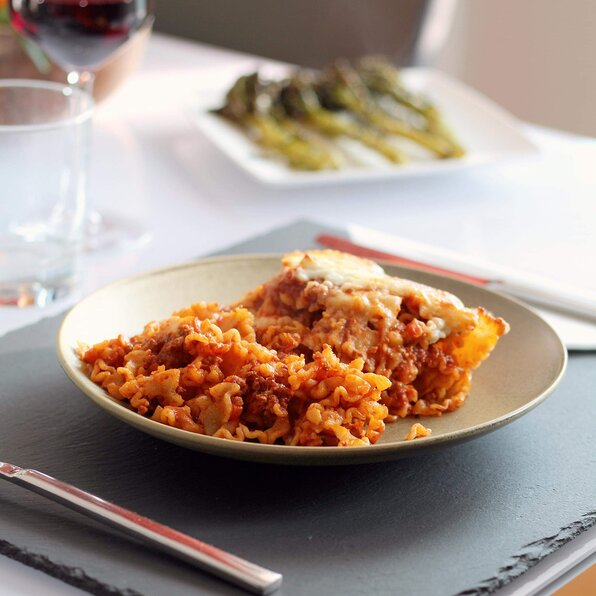

Lasagna
Pizza
Spaghetti
HomePage
Lasagna Recipe

This no-bake skillet lasagna is made right on your stovetop and is a fast and easy alternative to store-bought hamburger mixes!
Time and Portion Info
- Prep: 10 mins
- Cook: 35 mins
- Total: 45 mins
- Servings: 3
- Yield: 3 servings
Ingredients Needed
- ½ pound ground beef
- ½ (28 ounce) jar spaghetti sauce
- 1 (14.5 ounce) can diced tomatoes
- ½ onion, chopped
- 1 clove garlic, minced
- 2 teaspoons dried basil (Optional)
- 2 teaspoons dried oregano (Optional)
- 1 teaspoon salt
- 1 teaspoon black pepper
- 2 cups dried malfada noodles
- 1 cup shredded mozzarella cheese
Go back on top
Go to HomePage